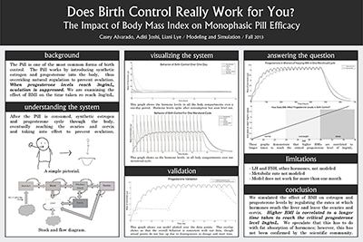

Through a course called Modeling and Simulation, two peers and I were given the opportunity to model a pharmacokinetic system of choice. We wanted to know what exactly was going on in that black box called "women's (our own!) bodies," so we analyzed the effect of body-mass-index on monophasic pill efficacy.
After talking extensively to our school health services, reading a lot about the endocrine system, and some math, we determined why The Pill is only mostly effective.
Poster below!
